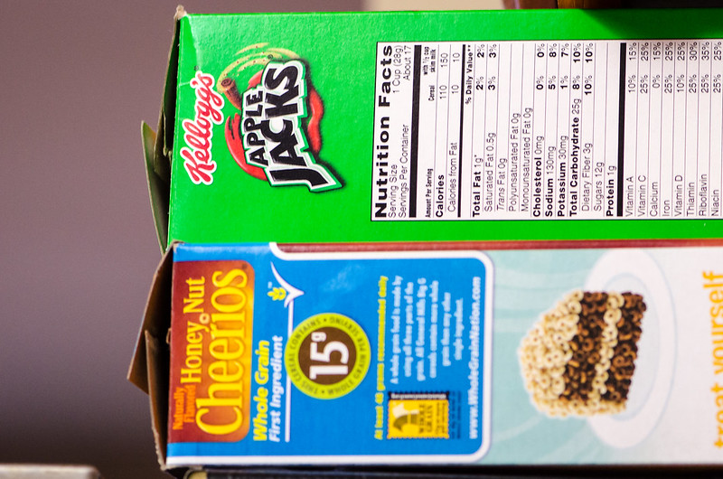

You can use your textbook, any notes that you have, and the available course pages in Canvas for help as you work on these questions.
In this activity, you will practice evaluating photos of food labels to determine if they are appropriate for the Label Analysis Assignment. The information on using photographs on pp. 337–338 of Markel & Selber can help with this activity.
Assessment: Canvas automatically marks your work Complete when you submit it. All you have to do is TRY the activity. It’s okay if you make mistakes. Recognize however that if you have not put in an effort to do the work, I may remove the Complete mark.
Question 1
Pull setup from Bank of sites. Base info:
Consider the following photo and explain whether it would make a good image for the Label Analysis Assignment.
- If it is a good image, explain why and how you would use it (what does it show about the product).
- If it is a poor image, explain why you would not use it and suggest how you would improve it.
Photos in the Bank
- Image credit: Tomato Soup by Kevin Dooley on Flickr, used under a CC-BY 2.0 license.
- Image credit: Penfold’s by Robin Taylor on Flickr, used under a CC-BY 2.0 license.
- Image credit: Green Giant by emeraldschell on Flickr, used under public domain.
- Image credit: Pork Slap by Jason Eppink on Flickr, used under a CC-BY 2.0 license.
- Image credit: elephant label by neomodernist on Flickr, used under a CC-BY-SA 2.0 license.
- Image credit: Perrier and... Ant by Linda Rain 714 on Flickr, used under a CC-BY 2.0 license.
- Image credit: Nutrition Label on Cans by Alabama Extension on Flickr, used under public domain.
- Image credit: Chock Full o' Nuts by Sheri on Flickr, used under a CC-BY-SA 2.0 license.
- Image credit: DSC_6272 by Tracie Hall on Flickr, used under a CC-BY-SA 2.0 license.
- Image credit: Kix Cereal by Mike Mozart on Flickr, used under a CC-BY 2.0 license.
- Image credit: Apple Jacks and Honey Nut Cheerios cereal boxes by m01229 on Flickr, used under a CC-BY 2.0 license.
- Image credit: Velveeta by JHERI H on Flickr, used under a CC-BY-SA 2.0 license.
- Image credit: Glory Foods Turnip Greens With Potatoes and Mushrooms by Glory Foods on Flickr, used under a CC-BY 2.0 license.
- Image credit: DeCecco Shells Pasta box by Willis Lam on Flickr, used under a CC-BY-SA 2.0 license.
Question 2
I have neither given nor received unauthorized assistance on this assignment.